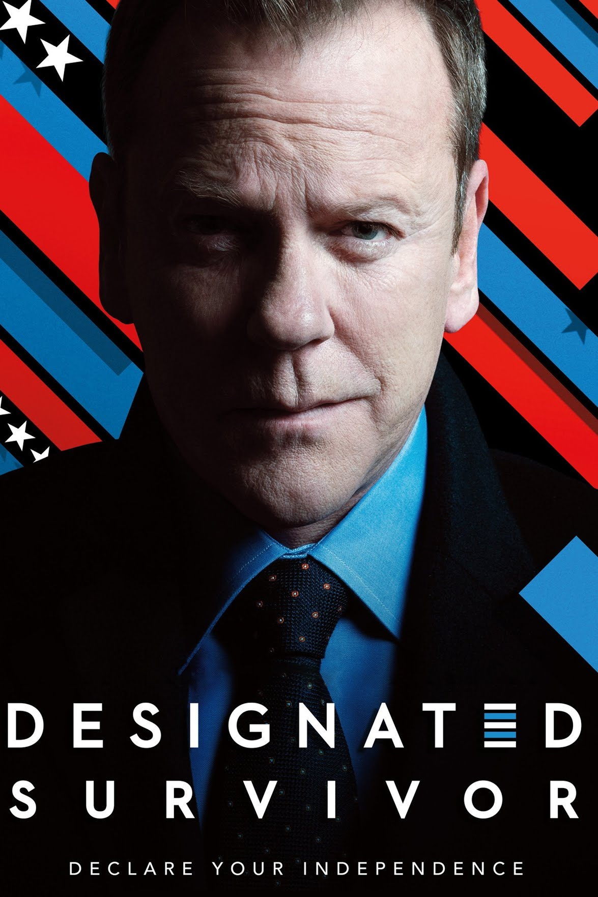

My Favorite TV Shows on Netflix
Designated Survivor
Designated Survivor is a political thriller created by David Guggenheim based on the United States policy of having a designated survivor, an individual in the Presidential line of succession who is chosen to stay away from high profile events like the State of the Union and presidential inaugurations in case of attack.
Outer Banks

The series is set in a community in the Outer Banks of North Carolina and follows conflict between two groups of teenagers in search of a lost treasure. In December 2021, the series was renewed for a third season which premiered on February 23, 2023.
Suits

Set at a fictional New York City law firm, it follows Mike Ross (Patrick J. Adams), who uses his photographic memory to talk his way into a job as an associate working for successful closer Harvey Specter (Gabriel Macht), despite being a college dropout who never attended law school.